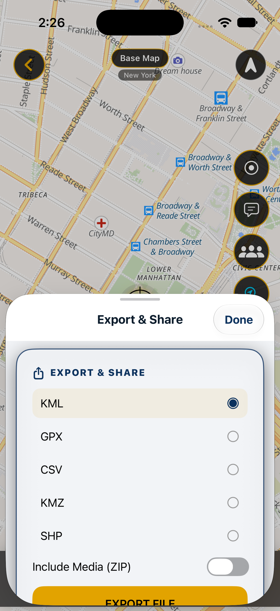

Check in QGIS
- Add one of the files as a vector layer.
- Confirm EPSG:4326 and three point features.
- Open the attribute table and compare ref_id, name, status and notes.
MAPNERO FIELD GUIDES
Prepare a small test project in QGIS, bring supported files into MapNero and check the exported result before moving your whole dataset.
Download free. Features and limits depend on platform, file format and plan. App interface available in 20 languages.

KEEP THE ORIGINAL PROJECT
Keep your original QGIS project and source files. Export a small layer with the same geometry types, coordinate reference system and important attributes as your real project.
A data transfer does not guarantee that QGIS styles, labels, plugins, attachments or project behavior will transfer. Treat these as separate checks.
THREE-POINT IMPORT TEST
Choose one file for your first test. Each contains the same three synthetic points in EPSG:4326 (WGS84), with names and attributes you can compare after import.
GeoJSON is a Free format. GeoPackage and Shapefile imports require Core or higher. Keep the Shapefile ZIP intact so its companion files stay together.
If a newly copied file is missing from the Downloads view, browse your phone’s storage and open its Download folder.
| Name | Longitude | Latitude |
|---|---|---|
| Reference A | 30.000 | 0.000 |
| Reference B | 30.001 | 0.001 |
| Reference Ç | 30.002 | 0.000 |
The name appears as the feature title. The other sample fields contain ref_id 1, 2 or 3; status “sample”; and notes “Synthetic example, not survey data”.
Exported with QGIS 3.44.15 on 28 October 2026 and checked in an Android test build. Check your current app version and platform guide before transferring a larger dataset.
The current mobile export guides list SHP, GPKG, DXF and QGIS bundle export under Pro or higher. Free formats include KML, GPX, CSV and KMZ.
GPX suits recorded tracks. KML/KMZ can carry map features, while tabular CSV needs careful coordinate and field checks. Advanced GIS formats have their own structure and limits.
Use a local file transfer for a private test. Uploading a file or sharing a download link is a separate decision about who can access the data.
Do not assume so. A project includes more than its feature data. Compare styles, labels, references and attachments separately on both sides.
Check the source and destination coordinate reference systems and the coordinate fields used during export or import. Stop and resolve the mismatch before collecting more records.
Keep the originals until you have reopened the exported files and checked the data you need. A successful export message alone does not establish a complete transfer.
Guide reviewed 25 October 2026. Menu labels, available formats and plan limits can change. Check the in-app options and linked platform guides.
Start with a small file and confirm the result on your actual device.